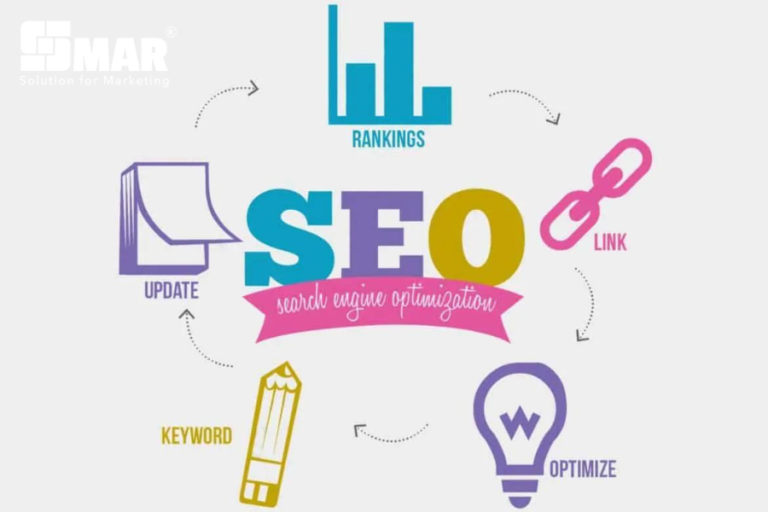
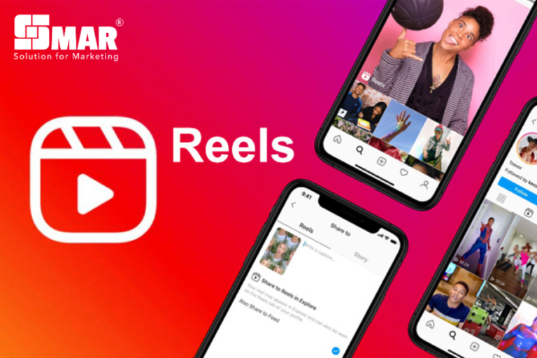
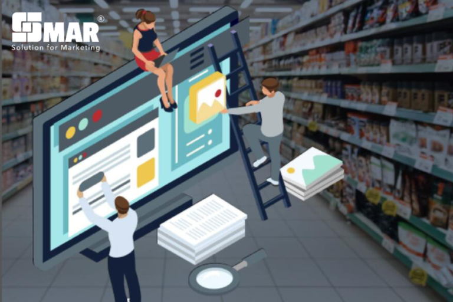
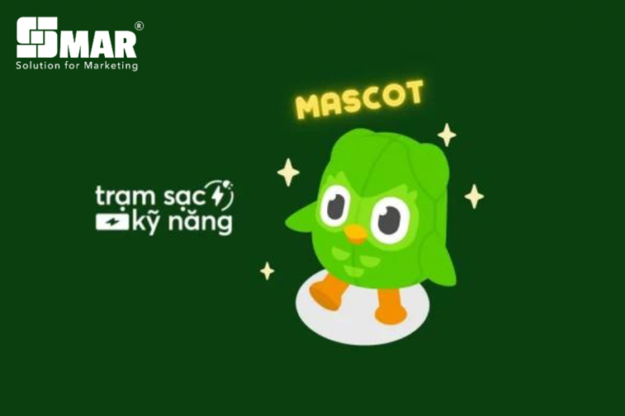

Danh mục nội dung
Năm 2024 hứa hẹn sẽ mang đến những thay đổi bùng nổ cho ngành Marketing, mở ra cơ hội to lớn cho doanh nghiệp bứt phá và dẫn đầu thị trường. Để bắt kịp xu hướng và tạo dựng chiến lược hiệu quả, SMAR Agency đề xuất phân tích 7 xu hướng Marketing nổi bật nhất trong năm 2024 để doanh nghiệp có thể định hướng đúng thị trường mục tiêu của mình.
1. Tiếp thị dựa trên Trí tuệ nhân tạo (AI)
Việc tích hợp trí tuệ nhân tạo vào chiến lược tiếp thị không chỉ giúp doanh nghiệp hiểu rõ hơn về đối tượng khách hàng mà còn tạo ra những chiến lược cá nhân hóa hiệu quả.
Theo báo cáo của HubSpot, 62% Marketers cho rằng AI đóng vai trò quan trọng trong chiến lược tiếp thị và 63% tin rằng phần lớn nội dung trong tương lai sẽ được tạo ra với sự hỗ trợ của AI.
Doanh nghiệp có thể ứng dụng AI vào nhiều công việc như:
- Tìm kiếm ý tưởng nội dung.
- Hỗ trợ chỉnh sửa bài viết.
- Dịch thuật.
- Thiết kế hình ảnh.
- Tạo video cơ bản.
2. Cá nhân hóa trải nghiệm khách hàng
Cá nhân hóa trải nghiệm khách hàng tiếp tục là xu hướng Marketing quan trọng trong năm 2024. Người tiêu dùng ngày càng mong muốn nhận được những nội dung và sản phẩm phù hợp với nhu cầu của bản thân.
Việc cá nhân hóa giúp doanh nghiệp:
- Tăng trải nghiệm khách hàng.
- Duy trì khách hàng trung thành.
- Tăng doanh thu.
- Tiết kiệm chi phí Marketing.
3. Tối ưu hóa SEO Website

Có đến 81% người tiêu dùng tìm kiếm thông tin trên Internet trước khi quyết định mua hàng. Vì vậy SEO tiếp tục là một trong những chiến lược Marketing quan trọng nhất.
Tối ưu SEO giúp website đạt thứ hạng cao trên Google, tăng khả năng tiếp cận khách hàng tự nhiên và nâng cao tỷ lệ chuyển đổi.
4. Video dạng ngắn thống trị

TikTok, Facebook Reels và Youtube Shorts tiếp tục bùng nổ trong năm 2024. Video ngắn giúp doanh nghiệp tiếp cận khách hàng nhanh hơn, truyền tải thông điệp dễ nhớ và tăng khả năng lan truyền.
Đây sẽ là định dạng nội dung được ưu tiên hàng đầu trong các chiến dịch Marketing hiện đại.
5. Chú trọng tiếp thị bền vững

Marketing bền vững không chỉ giúp doanh nghiệp xây dựng hình ảnh thương hiệu tích cực mà còn thể hiện trách nhiệm đối với xã hội và môi trường.
Những lợi ích nổi bật gồm:
- Nâng cao hình ảnh thương hiệu.
- Tăng sự gắn kết với khách hàng.
- Tạo lợi thế cạnh tranh.
6. Retail Media lên ngôi
Retail Media là hình thức quảng cáo trực tiếp trên các nền tảng bán lẻ như Shopee, Lazada hoặc Tiki.
Thay vì chỉ quảng cáo trên mạng xã hội, doanh nghiệp có thể tiếp cận khách hàng ngay tại thời điểm họ đang mua sắm, giúp tăng hiệu quả chuyển đổi đáng kể.
7. Sử dụng Mascot tương tác

Mascot là biểu tượng đại diện cho thương hiệu, giúp doanh nghiệp tạo dấu ấn mạnh mẽ trong tâm trí khách hàng.
Một Mascot được xây dựng tốt sẽ:
- Tăng nhận diện thương hiệu.
- Tạo sự gần gũi với khách hàng.
- Gia tăng mức độ ghi nhớ.
- Tạo cảm xúc tích cực khi khách hàng nhắc đến thương hiệu.
Kết luận
Năm 2024 đánh dấu bước phát triển mạnh mẽ của công nghệ và lĩnh vực Marketing. Sự phát triển của trí tuệ nhân tạo, video ngắn, Retail Media cùng các xu hướng cá nhân hóa và Marketing bền vững sẽ mở ra nhiều cơ hội mới cho doanh nghiệp.
Việc nắm bắt và ứng dụng đúng các xu hướng này sẽ giúp doanh nghiệp xây dựng chiến lược Marketing hiệu quả, nâng cao năng lực cạnh tranh và phát triển bền vững trong tương lai.
Bài viết liên quan

TOP 7 XU HƯỚNG MARKETING 2024
Năm 2024 hứa hẹn sẽ mang đến những thay đổi bùng nổ cho ngành Marketing, mở ra cơ hội lớn cho doanh nghiệp bứt phá.
Xem chi tiết »
SORA CỦA OPENAI: SỰ KẾT HỢP GIỮA AI VÀ SÁNG TẠO VIDEO
OpenAI đã tạo nên bước tiến lớn với Sora - AI tạo video từ văn bản.
Xem chi tiết »
YOUBRANDING 2023: CUỘC THI XÂY DỰNG THƯƠNG HIỆU CÁ NHÂN
Cuộc thi YouBranding 2023 đã chính thức trở lại với nhiều hoạt động sáng tạo.
Xem chi tiết »